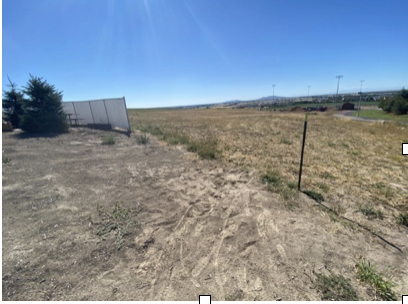
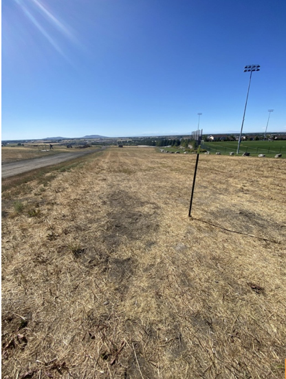
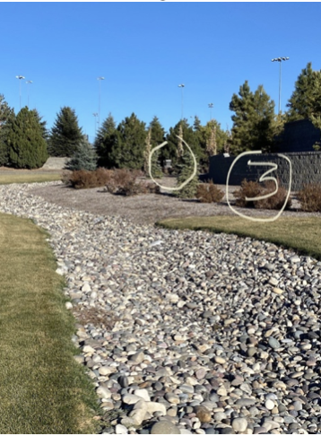
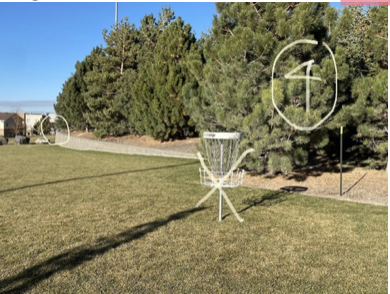
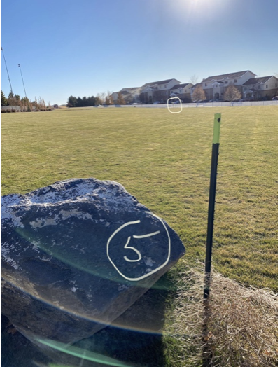
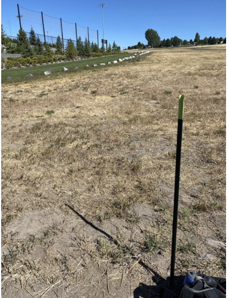
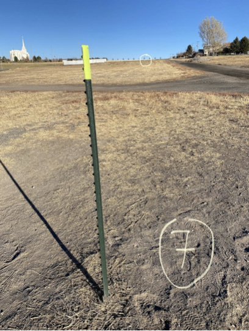
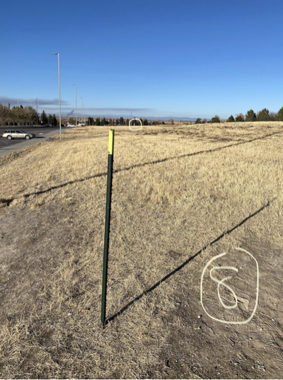
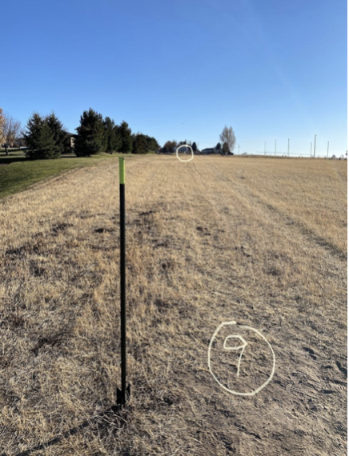

Hole 1

Distance: 288 ft | Par: 3
Clear downhill shot. Be careful not to overthrow into the mud volleyball pit.
Hole 2

Distance: 612 ft | Par: 4
Long shot bending around the soccer field. Avoid the right side fence.
Hole 3

Distance: 465 ft | Par: 4
Sharp right turn with trees and a rock river hazard in the middle.
Hole 4

Distance: 229 ft | Par: 3
Short hole with a slight right bend and a great birdie chance.
Hole 5

Distance: 226 ft | Par: 3
Wide open flat shot. Just keep it straight for an easy birdie opportunity.
Hole 6

Distance: 349 ft | Par: 3
Tricky narrow in-bounds strip with thick bushes on the left.
Hole 7

Distance: 420 ft | Par: 4
Wide open uphill shot. Keep it straight for an easy par.
Hole 8

Distance: 514 ft | Par: 4
Long downhill hole with lots of glide potential and birdie chances.
Hole 9

Distance: 400 ft | Par: 4
Wide open uphill finish. Trees on the left may block your second shot.